Social
Social
Friend Finding Platform
This small UX/UI project was a self-driven project, mostly out of curiosity. The process from initial user research to higher fidelity wireframes took a little over two weeks. By framing my problem around friend-finding, I was also able to tackle UX problems I had encountered in previous projects and experiences.
- Disciplines UX Design, UI Design
- Platform Mobile
- Project Type Individual
The Brief
Designs that facilitate genuine emotional and social connection resonate with me. Having experienced moments of social isolation, and hearing first-hand accounts from friends about their difficulties making friends in new cities, I began thinking about the problem.
When embarking on this project, I also wanted a deeper dive into UX. How can I help generate accurate and “sticky” user mental models? And in terms of creating an app that stands out, how do you design a mobile experience where success is defined not by use but real social connection?
Here's what I did.
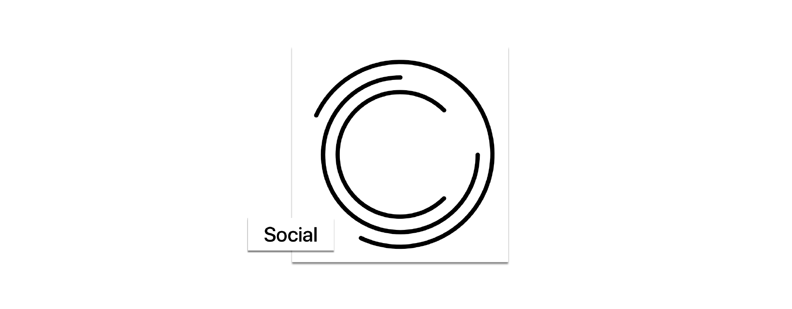
The Research
I started by conducting user interviews of people who use existing dating and friend-finding apps between the ages of 21-28. I talked to a total of 7 users. Staying open to all information and qualitative data was crucial starting off with user interviews, avoiding biases that would influence ideation and design direction too early.
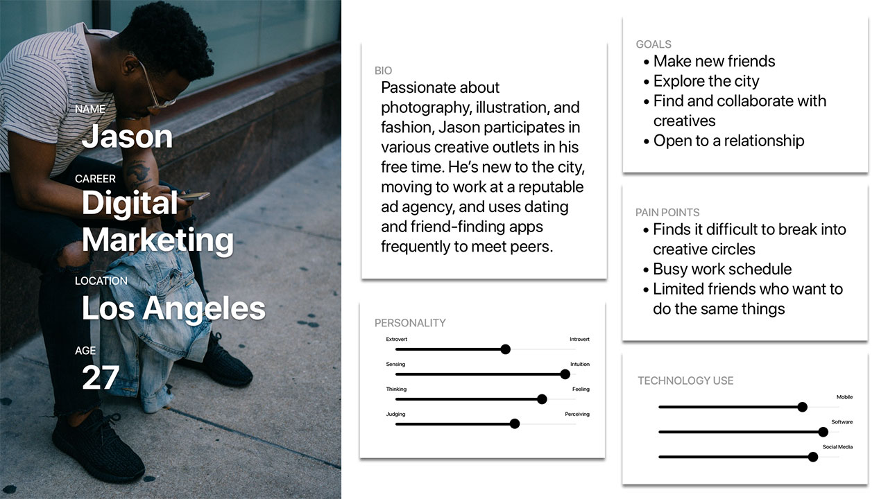
Archetypes
I noticed value in creating archetypes from qualities specific to dating/friend-finding app use. Recognizing the risk of oversimplifying or even neglecting individual user needs, I could see users from a behavioral perspective while spotting potential opportunity spaces.
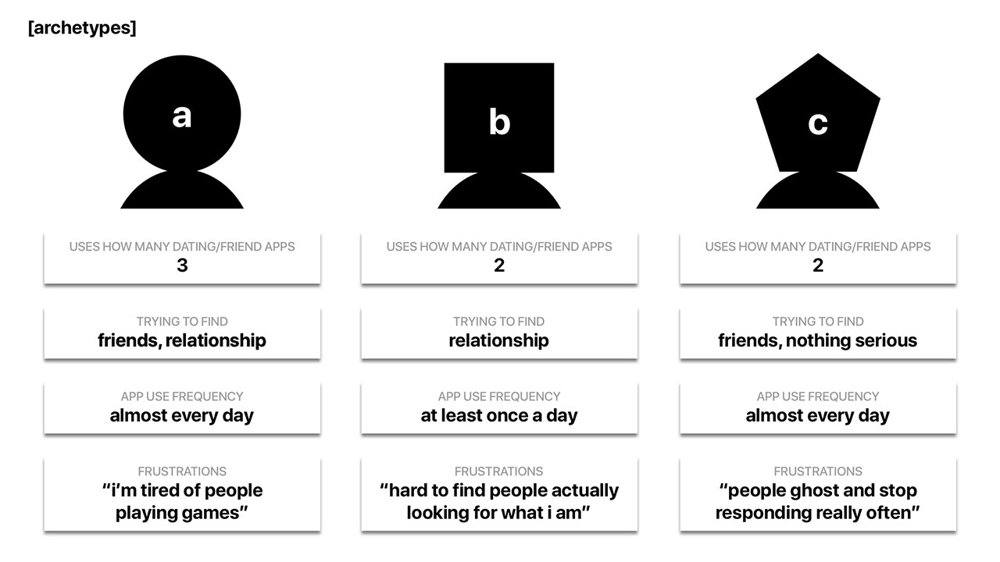
Defining Success
Personal and online quantitative data on the “success” rate of the apps was also enlightening. Users rarely defined success as number of matches or time spent on app - rather, they considered more meaningful social interactions.
Asking users about what they were looking for and how existing platforms were meeting their needs meant a clearer definition of what actual success was - and how rare that was for many users who I interviewed.
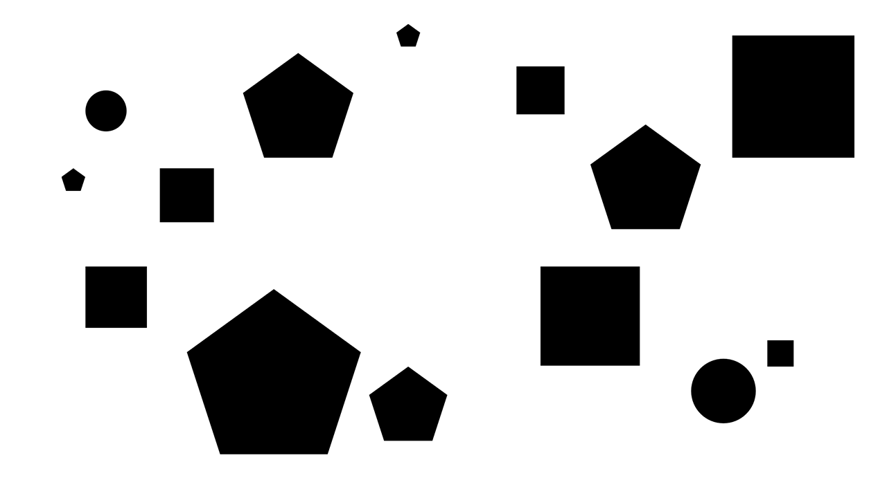
Summarizing Insights
In the end, from data collected in user interviews, I found two main findings that would influence my design moving forward:
Users on apps have mixed and unknown motives when searching.
Users don't know what other users are looking for - which according to users, ultimately leads to wasted time and/or disappointment.
In-person interactions are rare compared to online activity.
In-person interactions are rare - justifiably so because of safety reasons in most cases. In addition, however, current apps through gamification, are designed to continue the cycle of searching and talking - but less so on facilitating "real life" interactions.
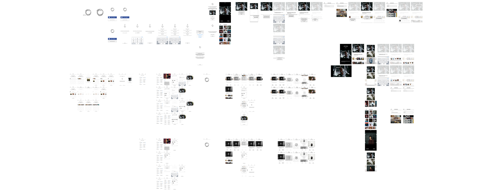
The Design
Moving into the design phase, the focus of my app became more about ways to solve the two main issues I came across. Extremely basic visual wireframes helped determine first impressions expressed to users. The layout of search screens, for example, couldn't stray too much from existing designs because of the risk of detaching from existing mental models of similar apps.
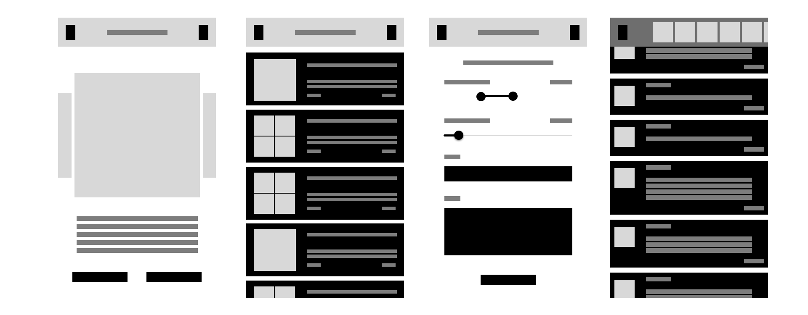
Wireframing
Wireframing as an exploration was essential in discovering trade-offs that would result in decision choices like informational clarity, the abundance of UI elements, and navigational styles.
In arranging wireframes for screens like the profile, I saw value in reducing visual clutter, hiding different mode selections as outright options. Actions like holding down a section let users modify certain content blocks. Through intermittent testing, I found that this needed further clarification - but added visual clarity.
At the same time, interaction flow for setting up how users sorted their search was crucial in creating a streamlined but personalized search experience according to user preferences.
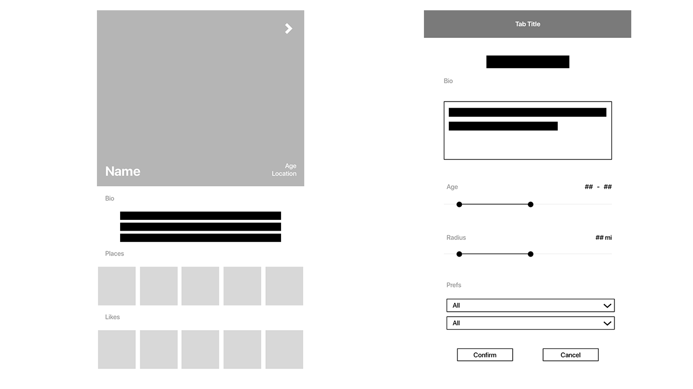
Visual Design
The visual and brand language of the app first began taking shape on the first flat designs. The minimalist approach was meant so UI elements allowed user profiles and their own content to take center stage. The humble white box acts a frame or a name-tag and presents possibility. But I also utilized it as a subtle form of encouraging users to fill up what they might perceive as a slightly awkward white space.
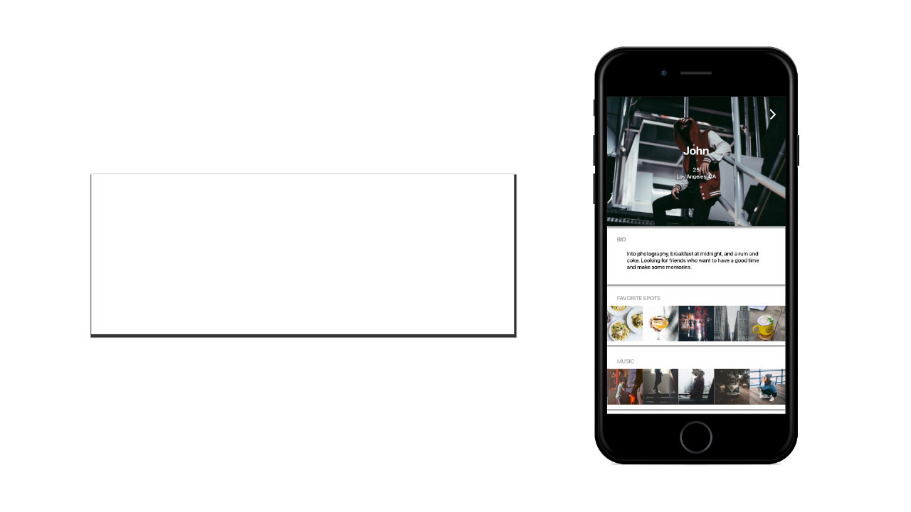
Navigation
I was interested in spatial relations and how they could aid navigation. Moving away from traditional tabbed layouts, I explored a more uncommon layout in which each major functionality sat on the highest row of pages while subsequent pages flowed downwards.
As a result, function and space are interconnected: functions are mapped left-right, depth mapped up-down.
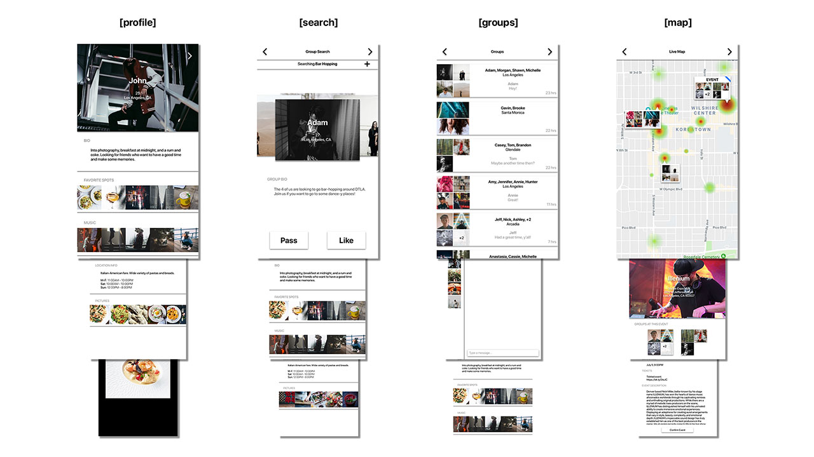
Design for Motion
I found that designing and prototyping with motion in mind helped to clarify navigational structure to users. When running through initial wireframes and low-fidelity prototypes, many users were interested in seeing how these different screens would flow from one to another. By designing prototyped motions, I was able to better convey how one screen would transition to another - and found that many users understood patterns, predicting future flows from previous animations.


Final Design
To address the aforementioned problems, the mobile experience is built with specific features:
01 - Aligning Motives
Users search for others according to event or activity. This not only gives users reasons to leave the app and do something, but also inherently brings together people with common interests.
02 - Group Searches
The ability to join group searches and mixing friend circles help to reduce hesitation over initial one-on-one meetings. Time limits on matches help promote matching only to do an activity - instead of mindless liking.
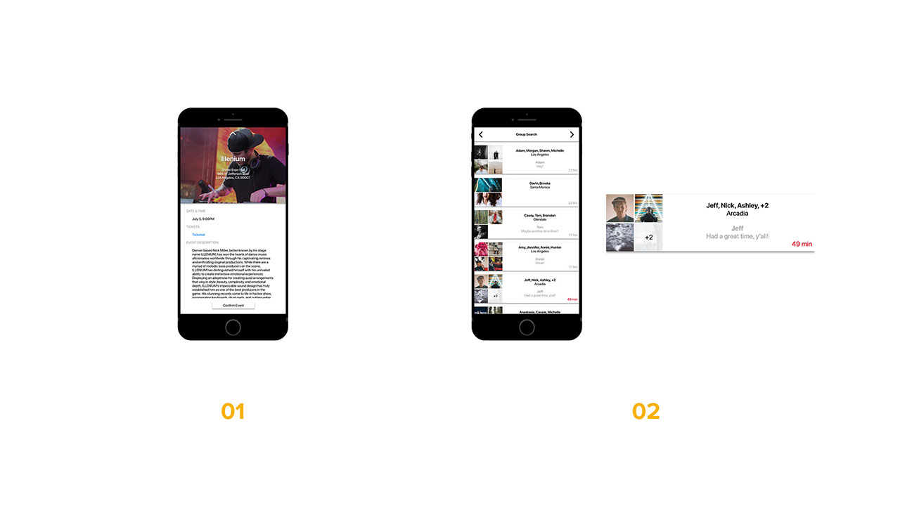
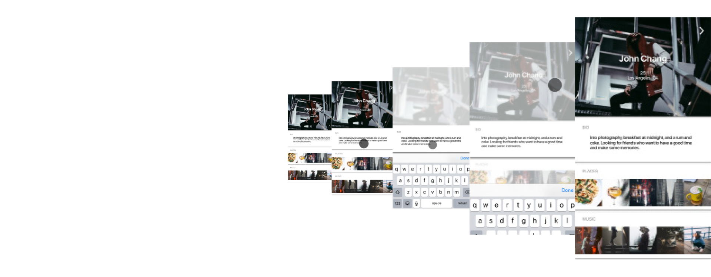
The Insights
Users come in with pre-existing mental models that are often formed by other experiences in similar domains - even if they’re actually quite different. Being different just to standout backfires quickly. Limiting options can be immensely powerful but finding the right balance costly.
Prototyping with motion early is curcial in matching designer and user mental models. Having those specific considerations planned and noted even in lo-fi models saves time - especially when creating a cohesive visual design language. Testing for user delight wasn't captured properly in static prototypes - the inclusion of micro-interactions made users provide more feedback.